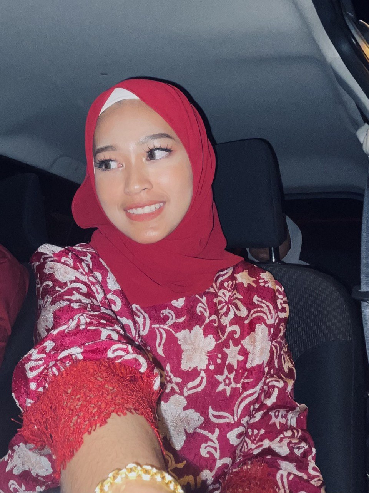

Hello! My name is Nur Alya Azzariza Binti Azahar. I am 20 years old, and I come from Kuala Terengganu, a beautiful coastal city located in the northeastern part of Peninsular Malaysia. It’s known for its rich culture, stunning beaches, and historic landmarks.
Being the second of three siblings, I have always considered myself lucky to have a loving and supporting family. While my little sibling is a continual source of happiness and liveliness in the home, my older sibling is someone I look up to for insight. We have a close connection, and I enjoy our time together.
My biggest sources of inspiration have been my parents. They have taught me the importance of hard work, resolve, and compassion. They have consistently inspired me to go for my goals and overcome any challenges.
Learning new things has always been a hobby of mine. At the moment, I'm studying Information Management at UiTM Machang in Kelantan. I'm excited to keep looking for new chances in my academic and personal lives because it's been a rewarding and difficult experience.
Regarding my personality, I think of myself as compassionate. I enjoy looking after others, learning from others, and investigating various viewpoints. Even though I sometimes get terrified, I always try to see the positive side of every situation.
In my free time, I enjoy going café hunting with friends and family, where I get to experience various flavors and tastes. I will always be enjoying spending time with my friends and family, making memories and strengthening relationships with them.